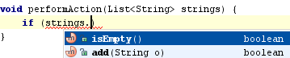
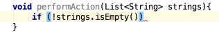

When using Code Completion in Java, you can accept the currently highlighted selection in the popup list with the exclamation sign (!) character. It will be inserted before the boolean method or variable you were completing, thus negating the whole expression.

After pressing '!':
